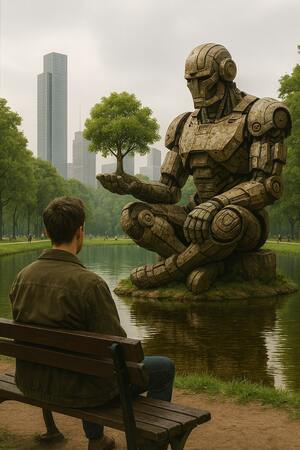
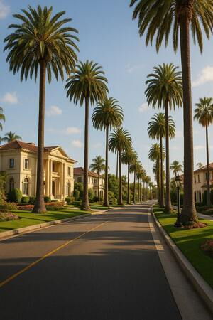
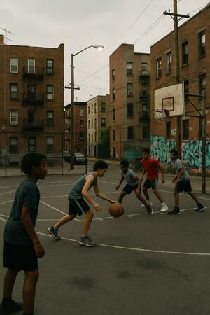
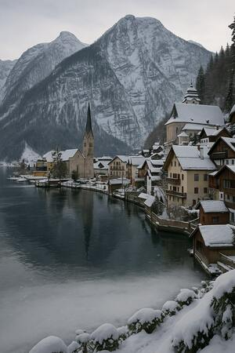
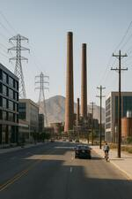
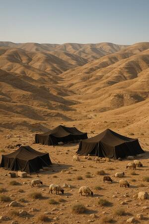

Montdave
Capital e Motor industrial do estado de Kingsdawn.
Universo de Cânticos de Machina
Visite as cidades, os burgos e as paisagens que dão vida ao universo da saga.
Conheça os cenários onde a fé encontra a tecnologia em Cânticos de Machina – Primavera Artificial. Explore cidades e burgos que moldam as jornadas dos personagens.

Capital e Motor industrial do estado de Kingsdawn.

Burgo nobre de Montdave onde moram as pessoas mais ricas da cidade.

Cidade de imigrantes e refugiados da Tecno-Guerra, feita de burgos multiculturais.
Burgo hispano-latino de Philston. Tradições que conectam passado e futuro.
Bairro de forte presença asiática. Dojôs, lanternas, especiarias e arquiteturas históricas.
Burgo dominado por gangues e o crime, mas com uma vizinhança unida.

Cidade pequena serrana onde o frio domina quase o ano inteiro.

Centro universitário e polo tecnológico, próximo ao Deserto de Yehuda.

Faixa árida próxima a Tairo, território dos nômades de Quedar.